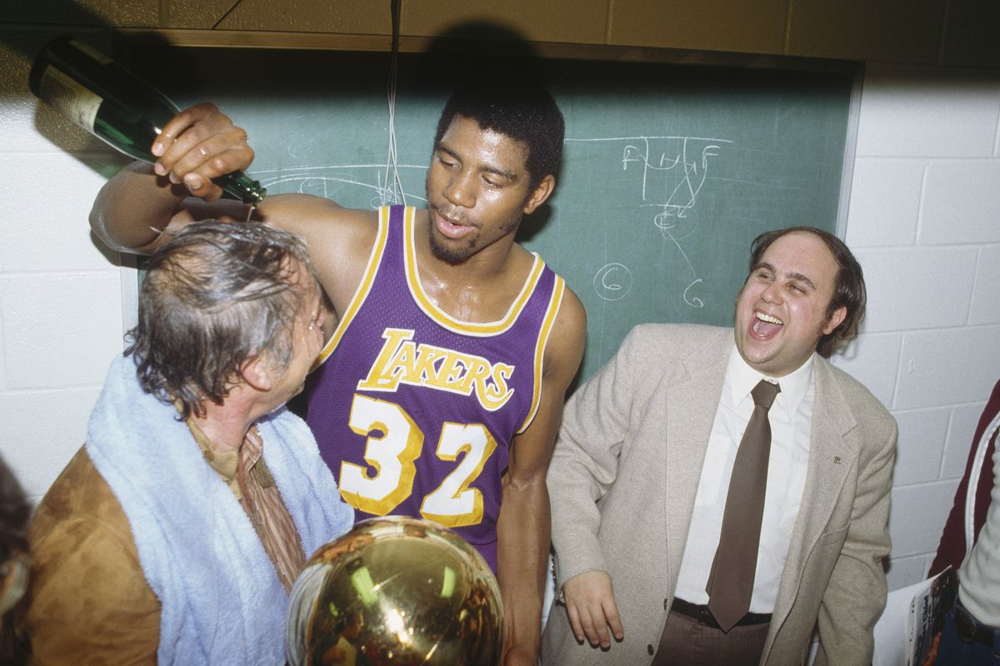
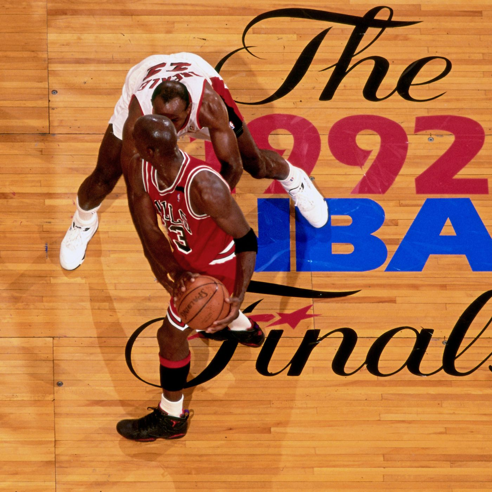
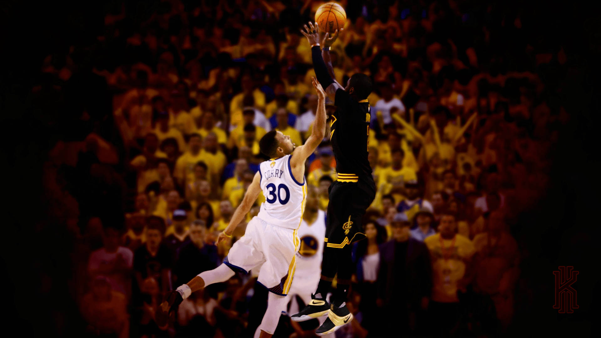

1980 NBA Finals - Los Angeles Lakers vs. Philadelphia 76ers

Magic Johnson's incredible performance in Game 6 of the 1980 NBA Finals, where he played center in place of the injured Kareem Abdul-Jabbar, led the Los Angeles Lakers to victory against the Philadelphia 76ers, securing the championship.
1992 NBA Finals - Chicago Bulls vs. Portland Trail Blazers

The 1992 NBA Finals is considered one of the greatest in history. Led by Michael Jordan, the Chicago Bulls faced the Portland Trail Blazers. The Bulls secured their second consecutive championship with a 4-2 series victory.
2016 NBA Finals - Cleveland Cavaliers vs. Golden State Warriors

The 2016 NBA Finals featured a historic comeback by the Cleveland Cavaliers against the Golden State Warriors. LeBron James and Kyrie both played a crucial role as the Cavaliers secured their first NBA title with a 4-3 series win.